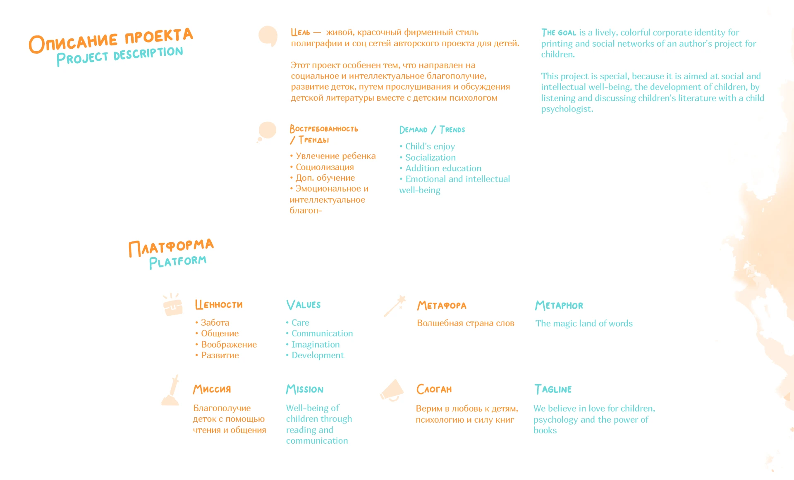
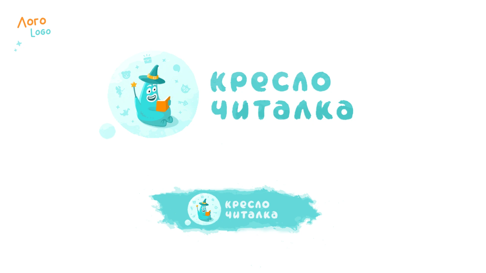
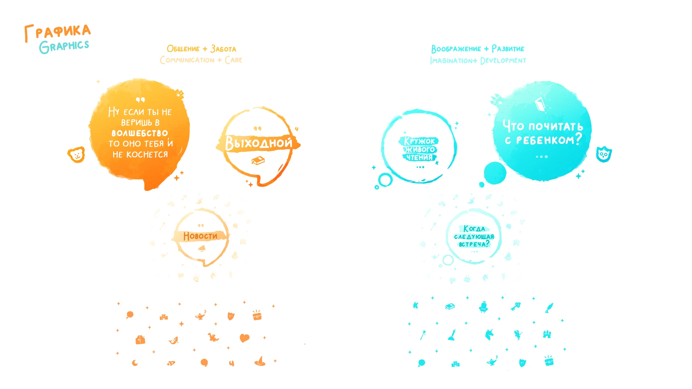
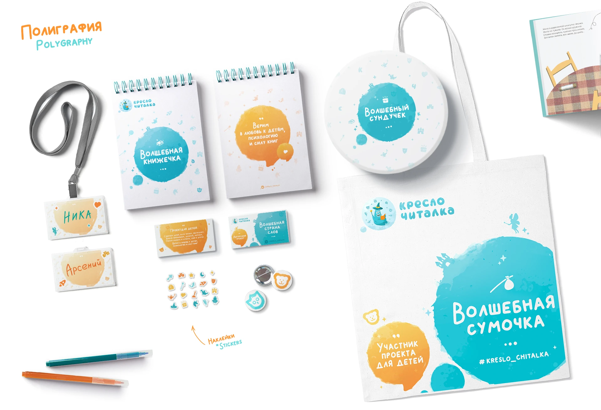

Кресло-читалка
2020 · Айдентика







01 / Инсайт
[инсайт, текст позже]
02 / Идея
[идея одной фразой, текст позже]
03 / Исполнение
[исполнение, текст позже]
04 / Результат
[результат, текст позже]